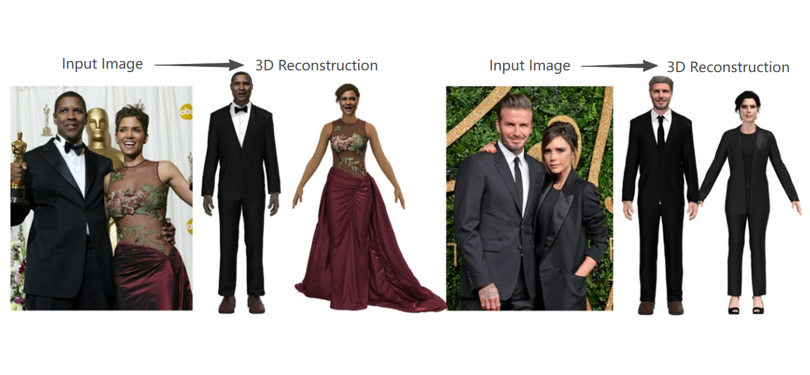

Honghong HE (Vicky / 賀紅紅)
Assistant Professor at the City University of Macau.
I completed my PhD at the Hong Kong Polytechnic University (PolyU), supervised by Prof. Tracy Mok (Associate Professor, ISD, HKUST) and Prof. Jintu Fan (SFT Chair Professor, PolyU).
My primary research centers on generative models and their applications in fashion. Additionally, I have explored areas including 3D model generation, augmented reality (AR), and virtual reality (VR).
Publications

TiPGAN: High-quality tileable textures synthesis with intrinsic priors for cloth digitization applications
He, H., Sun, Z., Fan, J., & Mok, P. Y. (2025). Computer-Aided Design.

SP3F-GAN: Seamless Texture Maps Generation by Adversarial Extension
Ding, Y., He, H., & Mok, P. Y. (2024). Multimedia Tools and Applications.

SGDiff: A Style-Guided Diffusion Model for Fashion Synthesis
Sun, Z., Zhou, Y., He, H., & Mok, P. Y. (2023). ACM Multimedia 2023.


Experiences
AR Museum Project Leader
Three City Project. Designed and led the Augmented Reality implementation.
Visit Project Page